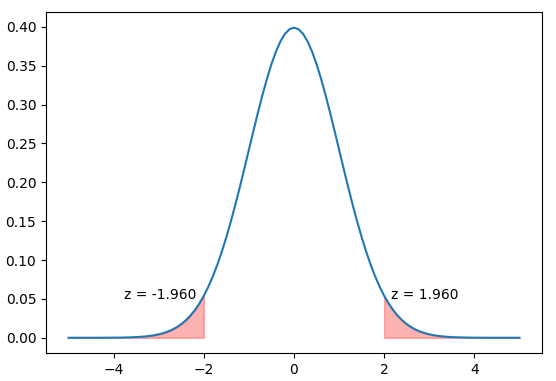

Hypothesis Testing
This topic can often feel unintuitive, obscure and even mechanical. It can sometimes be narrowed down to looking at tables to find p-values, degrees of freedom, and comparing numbers to a given z-score, or t-statistic.
Underlyingly, it seems to be the case that we need to "reject some hypothesis" just because the comparison of two numbers compels us to do so. But, why? Is it a social convention? Some sort of black magic? Should we belive the outcome of the test because there are textbooks that discuss the matter?
The motivation of this article is to provide the intuition behind hypothesis testing. Rather that taking it for granted, we will go through the foundational concepts that will allow us to comprehend why it matters, and why p-values and significance levels are important concepts when doing these tests.
In the mean time, we can say that this whole endevour matters because everytime we want to "test something" we could say that we are challenging the status quo. And, in order to do so, we need to gather evidence that support the notion that "business as usual" is not that usual when there is some sort of intervention.
Take, for instance, the question "does a drug improves recovery from a disease?", or "do price discounts really drive demand up?". In this type of questions we stem from the fact that there is no effect on our intervention (drug consumption, or price discount) unless proved otherwise, and proving otherwise involes leaning on statistical and data-driven solutions. This is what hypothesis testing is all about.
Probability Distributions
Given that we can think of probabilities as "shares of possibilities", a distribution of probabilities would allow us to see how probabilities concentrate across different events. Consider, for instance, the more than typical example of tossing a coin except we'll do it several times. We know that a coin has two faces so the probability of observing either face is 50%, therefore, if we toss the coin six times, for instance, we would expect to see three heads and three tails. Nonetheless, sometimes it won't be the case.
import random
import matplotlib.pyplot as plt
# One trial can be one coin toss
def trial(p):
return 1 if random.random() > p else 0
# We can perform a trial "n" times
def n_trials(n, p):
return sum([trial(p) for _ in range(n)])
# Let's say, an experiment is set of trials, and we'll run
# 10k experiments, each of which involves 6 coin tosses.
# For each experiment, we'll record the number of "heads".
experiments = []
for k in range(10000):
experiments.append(n_trials(6, 1/2))
# Do we see all the time a value of 0.5? If not, whata other
# values do we see?
counts = {e: len([v for v in experiments if e == v])
for e in set(experiments)}
# Get the values, or events, in the X axis,
# and the counts, or frequencies, in the Y-axis
x = [c for c, h in counts.items()]
y = [h for c, h in counts.items()]
fig, ax = plt.subplots()
ax.bar(x, y)
# Remove bounding boxes and save/display image
[ax.spines[v].set_visible(False)
for v in ('top', 'bottom', 'left', 'right')]
plt.savefig('trials_n_6.png', bbox_inches='tight', pad_inches=0)
plt.show()
The previous code would generate the following plot:

As previously mentioned, it is not the case that we always see three exact heads everytime we toss six coins. Some times we got none, and some others we got all six heads!
The bar plot, or histogram, exhibits that there might be some natural variation that simply comes from the process of tossing coins multiple times. That is why we said that "a distribution of probabilities would allow us to see how probabilities concentrate across different events"; where the term "events" refer to the values in the horizontal axis, for example "getting 3 heads out of 6" or "0 out of 6". These are events, that can be also thought of as the outcomes from our experiments.
We, however, can see that most of the time we get 3 out of 6 tosses, since that is what we could expect as the most probable or frequent outcome: observing heads half of the time whenever we are tossing coins.
Now, we have introduced the notion of probability distribuitions as how frequencies concentrate over diferent values (or events). Let's round this discussion off by watching what happens when, with a fixed number of 10,000 experiments, we increase the number of trials in each experiment. Let's consider doing 20 and 1,000 trials, but for that we should refactor the code to make this task more managable.
import random
import matplotlib.pyplot as plt
class Experiment:
def __init__(self, p, k, n):
self.p = p
self.k = k
self.n = n
# One trial can be one coin toss
def trial(self):
return 1 if random.random() > self.p else 0
# We can perform a trial "n" times
def n_trials(self):
return sum([self.trial() for _ in range(self.k)])
def run_experiments(self):
# Let's say, an experiment is set of trials, and we'll run
# n experiments, each of which involves k coin tosses.
# For each experiment, we'll record the number of "heads".
experiments = []
for k in range(self.n):
experiments.append(self.n_trials())
counts = {e: len([v for v in experiments if e == v])
for e in set(experiments)}
return counts
def __call__(self):
counts = self.run_experiments()
# Get the values, or events, in the X axis,
# and the counts, or frequencies, in the Y-axis
x = [c for c, h in counts.items()]
y = [h for c, h in counts.items()]
fig, ax = plt.subplots()
ax.bar(x, y)
# Remove bounding boxes and save/display image
[ax.spines[v].set_visible(False)
for v in ('top', 'bottom', 'left', 'right')]
plt.savefig(f'trials_n_{self.k}.png',
bbox_inches='tight', pad_inches=0)
plt.show()
After declaring the previous
class, if we run:
Experiment(0.5, 20, 10000)()
we get:
Similarly, if we do:
Experiment(0.5, 1000, 10000)()

It might come to our the attention that as we increase the number of trails (coin tosses; \( k \), from 6 to 20, and from 20 to 1000, until \( \infty \)). The number of distinct events increases; this is equivalent to the size of the bins in the X axis getting smaller and smaller. As this happens, we can think of the events, or values, in the horizontal axis as a continuum (hence, a continuos randon variable). For a very small change in \( X \), we can associate a frequency in the vertical axis \( Y \), regardless of how infinitesimal this change is.
This "continuum" across both \( X \) and \( Y \) can be generalized because we can visualize a solid line that generalizes this relationship. Now, we are ready to discuss how these lines constitute
probability density functions as a means to describe the "concentration of probabilities" along the range of a random variable.

Probability Density Function
A function is a mapping mechanism to relate elements of a set to elements of another set. In regard to probability density functions, when we input a value \( x \) we get the height of the function \(y\) (not the probability!). This height is also known as
likelihood, which can be interpreted as "the plausibility of observing a particular data point given the distribution (or its parameters; but more on this later, perhaps).
In previous paragraphs we observed how running several experiments, each of which consisted in tossing a coin \(k\) times, followed a certain distribution in which most of the events gathered at the center of the entire range of values. And, at the center's extreme ends we could see "some tails" which relate to "less frequent" cases. This is known as the
normal distribution; it has a symmetrical shape and can be expressed with the following mathematical formula:
$$
\Large \displaystyle f(x) = \frac{1}{\sigma\sqrt{2\pi}} \cdot e^{\frac{-(x - \mu)^2}{2\sigma^{2}}}
$$
In python, we could define it as:
from math import pi, exp
def normal_pdf(x, mu=0, sigma=1):
a = 1 / (sigma*(2*pi)**1/2)
b = exp(-(x - mu)**2 / (2*sigma**2))
return a * b
Once that function is declared, we can check whether it has the behaviour we expect:
import matplotlib.pyplot as plt
x = [d/10 for d in range(-50, 51)]
y_a = [normal_pdf(d, mu=0, sigma=1) for d in x]
y_b = [normal_pdf(d, mu=1.2, sigma=0.8) for d in x]
y_c = [normal_pdf(d, mu=0, sigma=2) for d in x]
for y in (y_a, y_b, y_c):
plt.plot(x, y)
plt.show()
We can compute the equivalent using
scipy like this:
from scipy.stats import norm
import matplotlib.pyplot as plt
x = [d/10 for d in range(-50, 51)]
y_a = [norm.pdf(d, loc=0, scale=1) for d in x]
y_b = [norm.pdf(d, loc=1.2, scale=0.8) for d in x]
y_c = [norm.pdf(d, loc=0, scale=2) for d in x]
for y in (y_a, y_b, y_c):
plt.plot(x, y)
plt.show()
We can see three normal distributions with three different parameters \(\mu\) and \(\sigma\). As mentioned earlier, the output of the function is not a probability, but the likelihood of observing the data under those parameters.
Cumulative Distribution Function
The probability density function, as discussed, is a description of how the probability is concentrated amongst diferent values of our random variable. We know that if we sum the area under the curve we would amount to the totality of events, this is what an integration does at the end of the day.
The integration of the probability density function is the
cumulative distribution function (CDF). This is a very useful shortcut for calculating the probability of observing a value less than or equal to the \(x\) value passed through the function.
from scipy.stats import norm
import matplotlib.pyplot as plt
x = [d/10 for d in range(-50, 51)]
y_a = [norm.cdf(d, loc=0, scale=1) for d in x]
y_b = [norm.cdf(d, loc=1.2, scale=0.8) for d in x]
y_c = [norm.cdf(d, loc=0, scale=2) for d in x]
for y in (y_a, y_b, y_c):
plt.plot(x, y)
plt.show()

Inverse of Cumulative Distribution Function
Instead of knowing what is the probability associated to a certain range of values, we might be interested in the value up to which a probability is associated.
from scipy.stats import norm
import matplotlib.pyplot as plt
x = [d/10 for d in range(-50, 51)]
y_a = [norm.ppf(d, loc=0, scale=1) for d in x]
y_b = [norm.ppf(d, loc=1.2, scale=0.8) for d in x]
y_c = [norm.ppf(d, loc=0, scale=2) for d in x]
for y in (y_a, y_b, y_c):
plt.plot(x, y)
plt.show()
This concept of a function's inverse is very useful in te context of hypothesis testing, as it allows us to obtain critical values that can help us determine confidence intervals and thresholds for hypothesis testing.
Consider a normal standard normal distribution, that is \( X \sim \mathcal{N}(\mu,\,\sigma)\). If we wanted to compute the associated values to the 5% of the distribution for both tails (that is 2.5% on each end), we can do the following:
from scipy.stats import norm
import matplotlib.pyplot as plt
import numpy as np # We need numpy for array operations
alpha = 0.05
lower_bound = alpha / 2
upper_bound = 1 - (alpha / 2)
lower_z_critic = norm.ppf(lower_bound, loc=0, scale=1)
upper_z_critic = norm.ppf(upper_bound, loc=0, scale=1)
# Convert to numpy arrays
x = np.array([d/10 for d in range(-50, 51)])
y = np.array([norm.pdf(d, loc=0, scale=1) for d in x])
plt.plot(x, y)
# Shade lower rejection region
plt.fill_between(x[x <= lower_z_critic],
y[x <= lower_z_critic],
color='red', alpha=0.3)
# Shade upper rejection region
plt.fill_between(x[x >= upper_z_critic],
y[x >= upper_z_critic],
color='red', alpha=0.3)
# Add annotations for critical values
plt.text(lower_z_critic - 0.2, 0.05,
f'z = {lower_z_critic:.3f}',
horizontalalignment='right')
plt.text(upper_z_critic + 0.2, 0.05,
f'z = {upper_z_critic:.3f}',
horizontalalignment='left')
plt.show()

Central Limit Theorem
We have reached to one of the foundational concepts over which the notion of hypothesis testing is built upons. Everything we've covered so far was pivotal to explain the importance of the Central Limit Theorem (CLT). Let's remind ourselves about the intuition regarding "challenging the
status quo" using evindence backed by data.
CLT provides us with some interesting properties that allows us to see if our evidence is as meaningful, or significant, as we would need to challenge the
status quo. Implicitly, we already explored CLT at the beggining while performing our multiple coin toss experiment. Every experiment consisted in tossing a coin \( k \) times, and we ran \( n \) experiments; that is the equivalent of obtaining \(n\) samples from a larger population of sike \(k\).
This is related to CLT because what this theorem states is that
the sampling mean of a larger population follows a normal distribution even if that distribution is not normal. This is also the case for other types of measurements, such as counts, proportions, and others. We could indeed observe that the counts of our trials turned out to be normally distributed after generating multiple experiments (or samples).
Now, to exemplify how the sampling mean distribution is normal even if the population is not, consider a fictitious rural town of 1,000 inhabitants for which we know their weekly income in some currency. This distribution is lognormal as most of the people have low income and only a handful is "rich".
$$
\large \displaystyle
f(x; \mu, \sigma) = \frac{1}{x \, \sigma \sqrt{2\pi}}
\exp\!\Bigl(-\tfrac{(\ln x - \mu)^2}{2 \sigma^2}\Bigr)
\quad\text{for}\; x > 0, \sigma > 0.
$$
Let's generate a distribution using python:
import matplotlib.pyplot as plt
from scipy.stats import lognorm
incomes = lognorm.rvs(s=0.8, loc=0, scale=80,
size=10000, random_state=0)
_ = plt.hist(incomes, bins=100, color='orange', alpha=0.7)
plt.show()

If we start sampling from the
incomes population, say, with samples of a size of 200 elements, and per each sample we calculated the mean and stored it in a list. How would that distribution look like? Let's sample 5,000 times.
import random
import numpy as np
import matplotlib.pyplot as plt
sampling_means = list()
for _ in range(5000):
sample = random.sample(list(incomes), k=200)
sample_mean = np.mean(sample)
sampling_means.append(sample_mean)
_ = plt.hist(sampling_means, bins=100)
plt.show()
Let's do the same but instead of calculating the mean, let's calculate median, proportion of elements with income greater than 250, and the standard deviation. Before we proceed, we should write some functional code:
import random
import numpy as np
import matplotlib.pyplot as plt
def stats_dist(arr, n, k, fn):
sampling_stats = []
arr = arr if isinstance(arr, list) else list(arr)
for _ in range(n):
sample = random.sample(arr, k=k)
sample_stat = fn(sample)
sampling_stats.append(sample_stat)
return sampling_stats
def prop_gt(v):
def inner_fn(arr):
return len([d for d in arr if d > v]) / len(arr)
return inner_fn
def quantile_fn(q):
def inner_fn(arr):
return np.quantile(arr, q)
return inner_fn
# Generate samples per each statistic of interest
medians = stats_dist(incomes, 5000, 200, quantile_fn(0.5))
props_gt250 = stats_dist(incomes, 5000, 200, prop_gt(250))
stds = stats_dist(incomes, 5000, 200, np.std)
It is time to plot the distributions of our sample statistics.
Sampling Medians
plt.hist(medians, bins=100, color="orangered")
plt.show()
Sampling Proportions > 250
plt.hist(props_gt250, bins=30, color="purple")
plt.show()
Sampling Standard Deviations
plt.hist(stds, bins=100, color="mediumseagreen")
plt.show()
Why does this happen? How is it possible that some calculation coming from a non-normal distribution ends up being normal? Although a sample is not the true population, it is a piece of it; hence, it is a piece of the greater truth. It is as though we were throwing darts at a target hanging on the wall. We might be awful at being precise, but after throwing multiple times, and averaging our results, it will turn out that the center of the target will somehow emerge in that calculation. Consider every sample as an attempt to hit the target's center, it might not be great, but multiple samples will capture some part of the truth. Just as we are aiming at the center with every dart, we are also aiming at the true parameter of the population with each sample statistic. Sometimes we'll be far off, some others we'll be close, but the totality of attemps will mostly look as though we've polished our aim.
So, what is the relationship of CLT with respect to hypothesis testing? Even if we don't have access to the entire population, a sample's statistic will most likely follow a normal distribution (even if the population does not). We can leverage the theorem to know where in the distribution our sample's statistic (or evidence) lies. Is our sample close to the center? Is it far off? If we have a challenging statement about the
status quo, is our evidence within trivial ranges? Or, it is sufficiently anomoulous to provoke second thoughts? Let's fiddle with a practical case to reinforce the intuition.
A/B Test: Cloud Alternative Free-Tier Offer
Cloud Providers offer a free-tier for a certain period of time to aquire new costumers. The point is that potential costumers who test the product could convert to paying costumers if they like it. Assuming there is a pre-existing free tier, out of which 3% of costumers convert, the company in questionis analizing an alternative to explore whether this conversion rate can be increased.
Control (A): The current free-tier offer of $300 credits for 90 days.
Variant (B): An alternative offer:
⇢ Smaller, Rolling Credits: $100 credits renewed every 30 days for three months, with unused credits expiring monthly.
⇢ Emphasis on sustained engagement over time:Knowing credits will expire might incentivize more rigoruos exploration.
A priori Design
Randomization
This experiment would involve randomly selecting individuals for both groups. It is pivotal to ensure that the control and treatment group are as alike as possible so that the effect of the Free-Tier variant can be attributed to the treatment itself and not any other reason (there can be potential biases based on how these groups are selected).
Length and size
Furthermore, let's assume this experiment is held for a period of time long enought so that sufficient data is gathered. For the sake of this example, the experiment ran fo a whole month and 50% of enrollments went through the variant.
Imagine we got 5,000 observations. Why this number? We'll get into more details when we cover
statistical power.
Research Question & Significance Level
We must play fair if we want to be certain that the experiment will reveal truly insightful results. This means that before gathering the data and analyzing the outcome "success" has to be defined beforehand. What do we mean by this? First, we need to have our research question clearly stated. In this case we want to answer:
Does our alternative free-tier configuration guarantee a conversion rate greater than 5%?
If we care about obtaining evidence to challenge the
status quo we need to state specifically what does
status quo means. The counterfactual would be our alternative scenario, that in which "business as usual" turned out to be unusual. The conventional jargon for this is to define a null and an alternative hypothesis, where, of course, the null refers to "business as usual".
\(H_{0}: p_{a} - p_{0} = 0\) "There is no difference between conversion rates"
\(H_{a}: p_{a} - p_{0} \neq 0\) "Conversion rates are different"
Where \(p_{0}\) and \(p_{a}\) correspond to the conversion rates for the control and treatment groups respectively.
Hypothesis statement is important as while defining them a statistic is put in place. In this case we have a proportions difference. We can use these proportions not only to compare them once we are done with the experiment, we can also relay on CLT to attest whether the observed difference is large enough to be considered as "significant" evidence of a causal effect. How so?
We know that sampling proportions, hence proportion differences, follow a normal distribution. Does our observed difference fall within expected variations due to a "chance model"? Or, is it large enough to be deemed as unusual? How much is "large enough" then? Well, that is something we need to establish
a priori. Our
significance level, \(\alpha\), shoud be a probability out from the sampling distribution; we'll define it as \(0.05\) which means that our observed statistic should only be observed 5% of the time.
Why do we do all this before? We can always cheat and tweak our research criteria to accomodate our data. But that is a terrible practice, and we not only want to be straightforward with others, we also want to be honest with ourselves because being able to boost a business' revenue using science is a win-win for all.
A posteriori Analysis
Let's construct our hypothetical datasets for our control and treatment groups.
def groups_outcomes(n1: 'control group size',
n2: 'treatment group size',
c: 'fraction of positives in control',
t: 'fraction of positives in treatment'):
control_negatives = [0 for _ in range(int(n1*(1-c)))]
control_positives = [1 for _ in range(int(n1*c))]
control = control_negatives + control_positives
treatment_negatives = [0 for _ in range(int(n2*(1-t)))]
treatment_positives = [1 for _ in range(int(n2*t))]
treatment = treatment_negatives + treatment_positives
return control, treatment
control, treatment = groups_outcomes(2500, 2500, 0.05, 0.07)
First of all we need to check whether our treatment displays and effect. So let's check both proportions, or conversion rates.
p_0 = sum(control) / len(control)
p_a = sum(treatment) / len(treatment)
print(f'p_0: {p_0}\np_a: {p_a}\np_a - p_0: {round(p_a-p_0, 3)}')
Initially, we can see:
p_0: 0.05
p_a: 0.07
p_a - p_0: 0.02
We have a proportions difference different from \(0\)! That's a good start. Now, we need to evaluate if that value is statistically significant. To do so, we need to remember our significance level, \(\alpha = 0.05\). Is our observed statistic as extreme as our \(\alpha\)?
P-value Calculation
A p-value is nothing but the associated probability of observing our statistic given the natural variation inherent to this type of calculation. In other words, we need to check the distribution of our statistic. We began this entire discussion doing coin toss experiments, that provided a distribution. We can do the same if we
pool all our records and sample from this pooled set.
But, why do wee pool? For at least three reasons:
1. If our null hypothesis states "there is no difference between conversion rates", then couldn't we treat both the variant and the control equally? After all, they are the same, right?
2. Given that "there's no difference", we can treat the pooled set as our best source for inference because have a larger set that what we would have ended up with had we not combined both groups, therefore we have more sampling capabilities! Also, we can simulate our experiment multiple times (just like we did with the coins). That means we preserve the characteristics of the initial design, like control and treatment sizes, that way we are ensuring reproducibility without any type of bias or mistakes (as long as we randomize!)
3. Sampling our statistic from our pooled set allows us to "recreate" the distribution. This implies we don't necessarily have to rely on "analytical methods". So if the CLT doesn't hold, we can still calculate p-values in a non-parametric, data-driven, fashion (but more on this later, perhaps).
Let's see some code to clarify this idea.
import random
import numpy as np
import matplotlib.pyplot as plt
# A priori settings
pool = control + treatment
control_size = 2500
treatment_size = 2500
alpha = 0.05
# Let's sample N times
sampling_stats = list()
extreme_occurrences = 0
for _ in range(2000):
# Randomize!
pool_ = random.sample(pool, len(pool))
# Select control and treatment groups (with exclusion)
pseudo_control = pool_[:control_size]
pseudo_treatment = pool_[control_size:(control_size + \
treatment_size)]
# Calculate proportions
pseudo_p_0 = sum(pseudo_control) / len(pseudo_control)
pseudo_p_a = sum(pseudo_treatment) / len(pseudo_treatment)
# And save the sampled statistic
pseudo_stat = pseudo_p_a - pseudo_p_0
sampling_stats.append(pseudo_stat)
# Is our sampled statistic greater than our
# experiment's observation?
# NOTE: It is important to convert to absolute values,
# as this is a two-tailed test
if abs(pseudo_stat) >= abs(observed_stat):
extreme_occurrences += 1
# What are our significant thresholds?
significant_thresholds = (alpha / 2, (1 - (alpha / 2)))
lower_crit = np.quantile(sampling_stats, alpha / 2)
upper_crit = np.quantile(sampling_stats, 1 - (alpha / 2))
# What is our p-value?
p_value = round(extreme_occurrences / len(sampling_stats), 5)
# Is our p-value as extreme as our significance level?
print(f'{p_value} <= {alpha}:', p_value <= alpha)
# Plot
plt.hist(sampling_stats, bins=20, color='dodgerblue')
plt.axvline(x=observed_stat, color='r')
plt.axvline(x=lower_crit, ls='--')
plt.axvline(x=upper_crit, ls='--')
plt.show()
The result from the
a posteriori analysis is the following:
0.0035 <= 0.025: True
We can interpret the chart of our recreated histogram as a symmetrical distribution where the expected value is \(0.0\) (just as what \(H_{0}\) states). If our alternative free-tier offer has indead no impact whatsoever, we can expect to see our observed conversion rates difference within "regular" levels of variation. Nevertheless, this is not the case at all.
A priori we designed an experiment were our "regular variation tolerance" would amount to \(95\%\) of our statistics total variation. Our p-value, on the other hand, tells us that a conversion rates difference of \( 2\% \) is likely to be observed \(0.25\%\) of the time.
This, however, should not be interpreted as "it is true that the free-tier alternative will impact the business"; we should instead treat this as "significant evidence" of a causal effect that can be used as leverage to support a change in the way the free-tier is configured. Why? We haven't systematically tested this in the long run to begin with. And, secondly, what constitues "true" after all?
This is material for a deeper epistemological discussion, but, in the mean time, the only thing we have is an experiment result that we can interpret as "highly unlikely", so its cause might be attributed to the fact that we dilligently separated two random and representative groups where the "only" difference is the treatment they received. This better than nothing, or better than sheer belief.
Anyways, did we reject the null? Yes, we did. Our p-value is far lesser that our pre-determined significance level.
Parametric vs Non-parametric approach
We didn't delve much into what is a parametric or non-parametric method regarding p-values. We'll do now.
This article began by exploring some analytical functions. We saw that
probability density function (PDF), when integrated turns to a
cumulative distribution function (CDF), and the inverse of the
CDF, the
percentage point function (PPF), also known as
quantile function, allows us to know what value of a random variable corresponds to a certain probability.
If we know the parameters of our distribution we can leverage the
PPF to calculate p-values. So, what are the parameters of our distribution? Let's get calculate the from scratch relying on analytical methods such as the
expectation rules. Because of the CLT, we know that our sampling distribution of conversion rates (estimated proportions) follows a normal distribution \( \hat{p} \sim \mathcal{N}(\hat{\mu},\,\hat{\sigma})\).
Getting \(\Large\hat{\mu}\)
Formally speaking, we can say that:
$$
\Large \displaystyle
\mathbb{E}[p_a - p_0] = \mathbb{E}[0] = 0
$$
That is true because, under the null, we are saying that there is no difference between proportions.
Getting \(\Large\hat{\sigma}\)
Considering that the variance is an expectation of deviations from the mean:
$$
\Large \displaystyle
\newcommand{\Var}{\operatorname{Var}}
\begin{align}
\Var(X) &= \mathbb{E}[(X - \mathbb{E}[X])^{2}]
\\ &= \mathbb{E}[X^{2} -2X\mathbb{E}[X] + (\mathbb{E}[X])^{2}]
\\ &= \mathbb{E}[X^{2}] - 2\mathbb{E}[X]\mathbb{E}[X] + (\mathbb{E}[X])^{2}
\\ &= \mathbb{E}[X^{2}] - (\mathbb{E}[X])^{2}
\end{align}
$$
In the context of binary outcomes, such as potential costumer either converted to paying costumer or not, \( X \in [0, 1] \), so \(X^2 = X\) because \(0^2 = 0\) and \(1^2 = 1\); hence \(\mathbb{E}[X^2] = \mathbb{E}[X]\). Furthermore, since we know that the expectation of a binomial variable is its probability (we could also say proportion as \(\hat{p} = \frac{X}{n}\)), then we can state that \(\mathbb{E}[X] = p\). So,
$$
\Large \displaystyle
\newcommand{\Var}{\operatorname{Var}}
\begin{align}
\Var(X) &= \mathbb{E}[X^{2}] - (\mathbb{E}[X])^{2}
\\ &= \mathbb{E}[X] - (\mathbb{E}[X])^{2}
\\ &= p - p^2
\\ &= p\cdot(1 - p)
\end{align}
$$
The previous expression refers to the variance of a single Bernoulli trial. Since we are dealing with multiple trials whe need to express the variance of our statistic as an average of multiple trials:
$$
\Large \displaystyle
\newcommand{\Var}{\operatorname{Var}}
\begin{align}
\Var(\hat{p}) &= \frac{p\cdot(1 - p)}{n}
\end{align}
$$
Now, since we know that:
$$
\Large \displaystyle
\newcommand{\Var}{\operatorname{Var}}
\begin{align}
\Var(p_a - p_0) &= \Var(p_a) + \Var(p_{0})
\end{align}
$$
Then,
$$
\large \displaystyle
\newcommand{\Var}{\operatorname{Var}}
\begin{align}
\\hat{sigma} &= \sqrt{\frac{p_a\cdot(1 - p_a)}{n_a} + \frac{p_0\cdot(1 - p_0)}{n_0}}
\\ &= \sqrt{\frac{0.07\cdot(1 - 0.07)}{2500} + \frac{0.05\cdot(1 - 0.05)}{2500}}
\\ &= \sqrt{\frac{0.0651 + 0.0475}{2500}}
\\ &= 0.00671
\\ &\approx 0.007
\end{align}
$$
Let's revise what were the estimated parameter values that we got from the python code:
>>> np.mean(sampling_stats)
0.00011440000000000003
>>> np.std(sampling_stats)
0.006616321685045248
Now that we've estimated our parameters analytically, let's use the
to calculate again our p-value.
from scipy.stats import norm
# Parameters
mean = 0
std = 0.007
observed_stat = 0.02
# P-value for two-tailed test
left_area = norm.cdf(-1*observed_stat, loc=mean, scale=std)
right_area = 1 - norm.cdf(observed_stat, loc=mean, scale=std)
p_value = left_area + right_area
print("P-value:", p_value)
P-value: 0.004274733960172528
And, for the critical threshold values we can do this:
from scipy.stats import norm
# Parameters
alpha = 0.05
# Critical thresholds
lower_crit = norm.ppf(alpha / 2, loc=mean, scale=std)
upper_crit = norm.ppf(1 - alpha / 2, loc=mean, scale=std)
print("Critical thresholds:", lower_crit, upper_crit)
Critical thresholds: -0.013719747891780381 0.013719747891780378
Statistical Power
...
Type I & II Errors
...
A/B/C... Tests